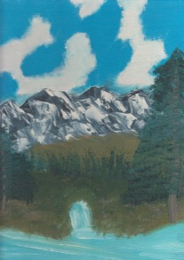
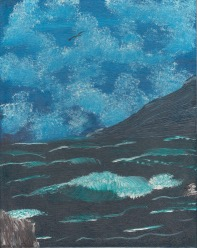
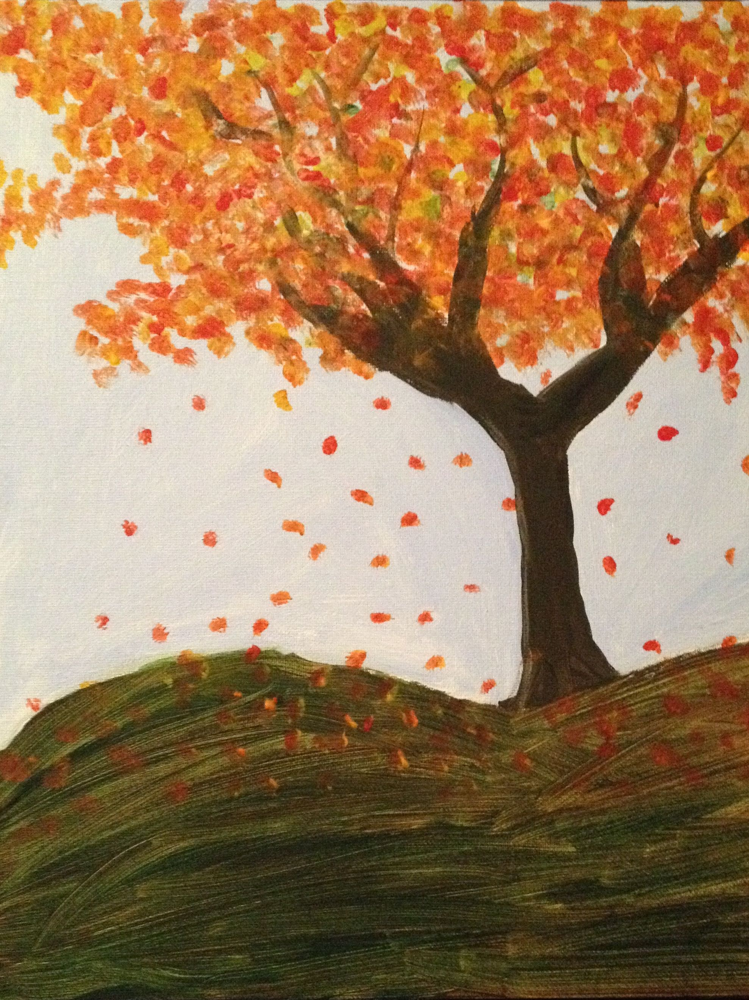
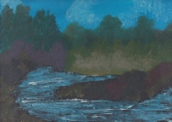

Some of my Favorite Things...
Painting
I have never claimed to be a creative person and I certainly have never thought of myself as artistically gifted. I can't even draw a straight line!! But over the last few years, I have realized that I enjoy painting. Now I understand that being good at this hobby has nothing to do with the level of enjoyment I get from spending time painting.
   Wine Tastings
Don't get me wrong...sometimes wine tastings can feel stiff and snobbish - more like a funeral than an excuse to try something new. The vintner spends 5 minutes talking about the aroma, undertones, acidity, tannins, and the finish with hints of vanilla, butterfly kisses and magical fairy dust. All I know is whether I like the taste of the wine or not - and as the tasting continues, odds are I tend to like the wine more and more and more... Wine tastings are an adventure and a fun way to spend time with friends and family.
Reading
Along with her friendly smile and her huge caring heart, I also inherited my mom's love of reading. I'm addicted to Stephen King and his often twisted stories. Although I still love the feel of holding a physical book and turning each page as I go, I have to admit that using my Kindle is so much more convenient!